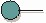

|  |
| Этот рабочий продукт задает набор алгоритмов (набор операций), предлагаемых элементом модели классификатора (в частности, классом, подсистемой или компонентом). |
| Типы рабочих продуктов: Элементы модели |
|
Назначение
|
Интерфейс объявляет набор операций, включая их сигнатуры и параметры, которые применяются для указания служебных
функций, предлагаемых элементом модели классификатора (то есть, классом, компонентом или подсистемой).
|
Взаимосвязи
| Артефакт-контейнер |
|
| Роли | Ответственный:
| Изменен:
|
| Задачи | Вход для:
| Выход из:
|
Описание
| Основное описание | Интерфейс представляет собой элемент модели, который определяет набор алгоритмов (набор операций), предлагаемых
элементом модели классификатора (в частности, классом, подсистемой или компонентом). Классификатор может реализовывать один
или несколько интерфейсов. Интерфейс может быть реализован одним или несколькими классификаторами. Классификаторы,
реализующие одни и те же интерфейсы, могут заменять друг друга в системе. Каждый интерфейс должен предоставлять уникальный
и правильно определенный набор операций. |
Доводка
| Опции представления | Представление UML: Интерфейс
Интерфейсы обычно применяются в сочетании с Рабочий продукт: Подсистема проектирования; обычно не возникает
необходимости применения интерфейсов в сочетании с Рабочий
продукт: Классы проектирования, где обычно достаточно использования общих операций. Интерфейсы обычно применяются в
тех случаях, когда необходимо определить алгоритм (в форме сигнатур операций) независимо от элементов, реализующих эти
операции. Это предполагает существование укрупненных абстракций алгоритма или заменимости, моделируемых как подсистемы
проектирования. Для проектов, не имеющих атрибутов, интерфейсы можно опустить.
|
Дополнительные сведения
© Copyright IBM Corp. 1987, 2006. Все права защищены..
|
|